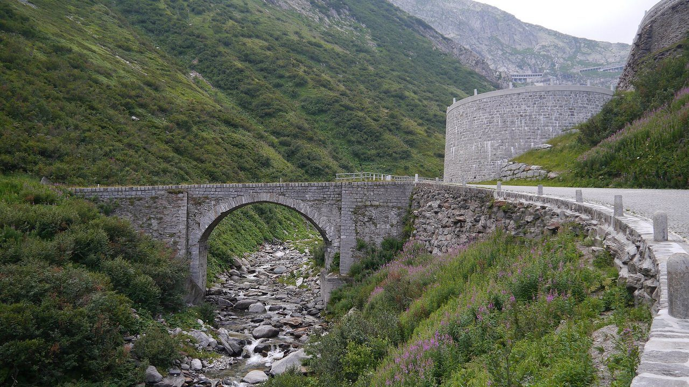

Race, Tremola, Gotthard Pass

Behind
Best +0:01
371W
Target 418 W-47 W
- Cadence
- 87rpm
- Heart
- 140bpm
- Speed
- 26.5km/h
Work4 of 7
3:03
Next: · 3:00 at level 13
+8.3%
283 m climbed
4.61 km
19
Resistance / 32
Solo races your best-time ghost: position reads Ahead or Behind, and solo alone gets a Pause button. Frozen at 12:57.